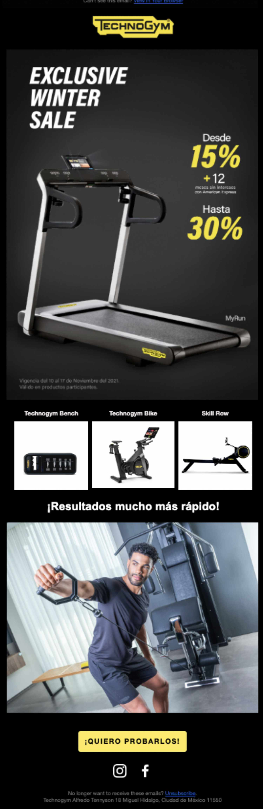
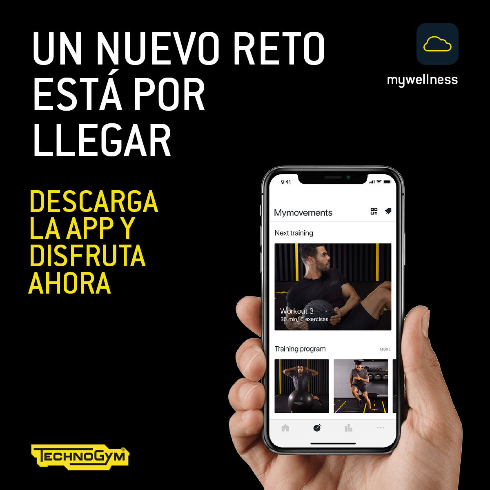
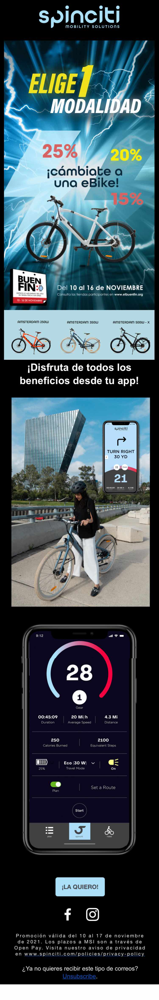
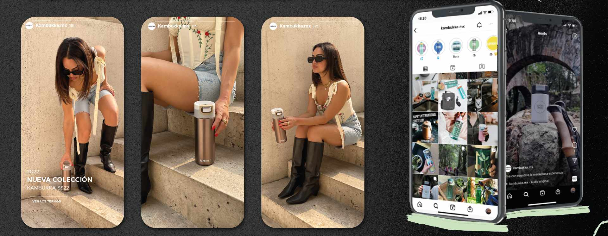

Grupo Cascada
Project Manager y Diseñadora In-House · Mar 2020 – Abr 2022
- Diseñé campañas mensuales de email marketing para Technogym, Spinciti y Salt House mediante Klaviyo, HTML y CSS.
- Desarrollé y adapté más de 30 plantillas HTML/CSS, combinando el editor visual de Klaviyo con modificaciones de código.
- Implementé parámetros UTM para el seguimiento de campañas específicas en Salesforce.
- Gestioné contenidos digitales para cuatro marcas y participé en campañas y estrategias de e-commerce, incluido el posicionamiento de Kambukka.



